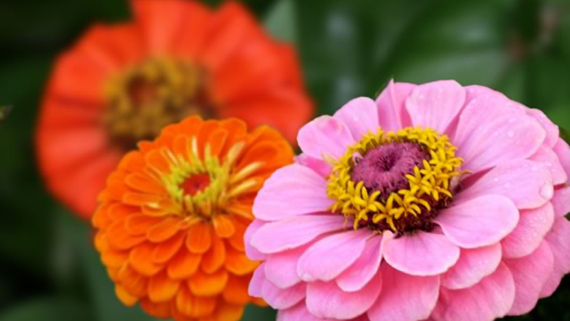

• Zinnia •
retourLes zinnias ne laissent pas indifférent. Il y a ceux qui les adorent et ceux qui les apprécient moins, qui leur reproche un aspect peu naturel, ou un port trop rugueux et des feuilles trop « rêches ».
J'aime jardiner | Pas de prix
